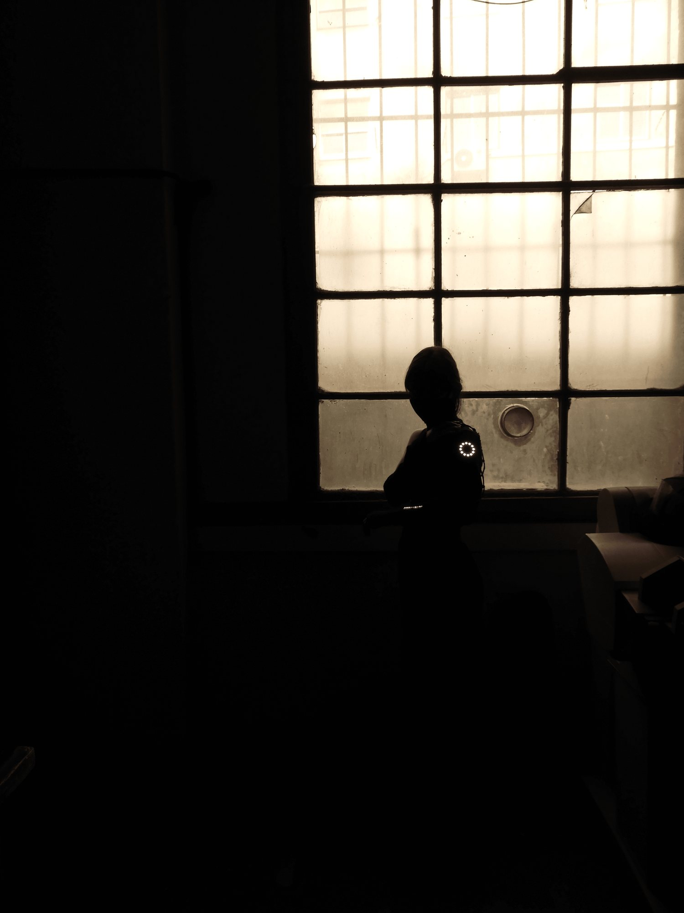

7. Byte Sleeve
A wearable for environment and identity control


Set in a dystopian future dated 2100, environmental conditions have been worsening, reaching scorching temperatures and high levels of UV radiation. In addition, economic protectionism increased control of borders, resources, and the population, in general, have been consolidated.
We propose a wearable designed to be used both outdoors and underground, facilitating safe movement. The machine warns us of the fluctuation of the different harmful values that it is programmed to analyze: temperature, humidity, and UV; through LEDs and vibration. If it detects that any value reaches dangerous levels for health, an alarm system is activated. This information is stored and can be accessed through an NFC sensor.

It is a dystopian future we are projecting; however, it could be plausible. Moreover, nowadays, this prototype plus some functional modifications could be used in different fields related to health.

Click here to visit the project’s GitHub repository, with the code used for programming the lilypad that runs Byte Sleeve.
Assignment for my “Tangible experiences” class
2nd year of ELISAVA’s Interaction Design degree, 2022
Project made with Andie Puentes, Samanta Román and Fabiola Choucair.